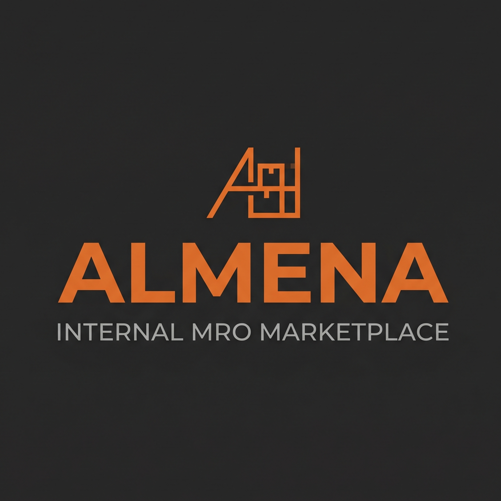
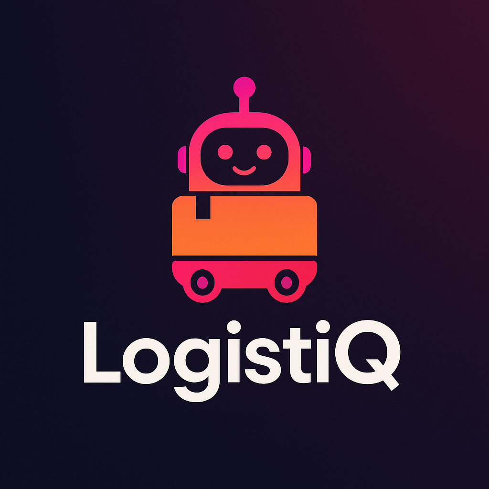
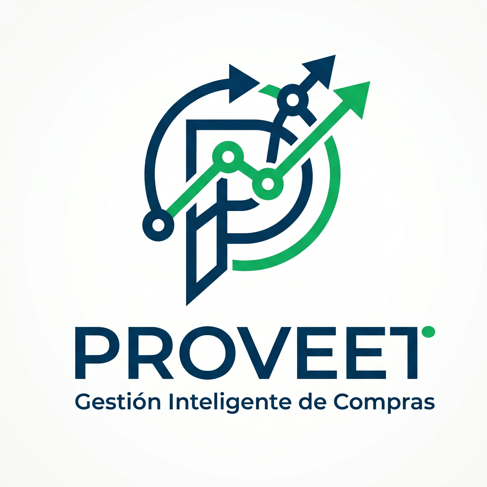
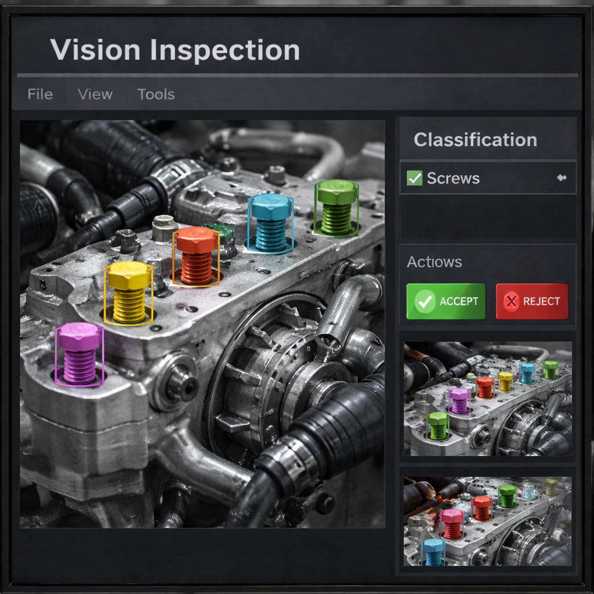

Tecnología que transforma la industria automotriz y manufacturera.
Explorar solucionesTransformamos datos, procesos y equipos en sistemas inteligentes conectados.


Soluciones tecnológicas implementadas en entornos industriales, logísticos y de control avanzado.
Sistema integral para la gestión documental, control de cambios, aprobaciones, trazabilidad de revisiones y administración de accesos dentro de procesos de calidad.

Sistema integral para la gestión de boletas de laboratorio, con control estadístico del proceso, trazabilidad completa y captura estructurada de mediciones en tiempo real.

Sistema inteligente de monitoreo de soldadura con análisis en tiempo real, detección de anomalías y generación automática de alertas para control del proceso.

Plataforma de control de almacén MRO diseñada como un marketplace interno de planta, donde los usuarios pueden consultar materiales, solicitar refacciones y dar seguimiento al flujo de abastecimiento.

Sistema de control logístico para gestión de materiales, seguimiento de lotes, validación de rutas y sincronización entre producción y almacenes.

Plataforma para la gestión de proveedores y procesos de licitación anónima, permitiendo comparar propuestas, controlar documentación y mantener trazabilidad en decisiones de compra.

Plataforma de validación de secuencia de procesos que previene el avance de piezas incompletas e integra automáticamente resultados de máquinas de balanceo.

Sistema para la gestión de herramentales, control de inventario, asignación de recursos, historial de movimientos y trazabilidad de herramientas dentro de planta.

Digitalización del mantenimiento autónomo mediante checklists inteligentes, evidencia fotográfica y trazabilidad estructurada de actividades operativas.

Diseño, programación y puesta en marcha de celdas automatizadas con robots industriales, optimizando trayectorias, tiempos de ciclo y confiabilidad del proceso.

Soluciones de visión artificial basadas en inteligencia artificial para detección automática de componentes, verificación de presencia y control de calidad avanzado.
Sistema digital para la gestión de accesos en eventos masivos y estacionamientos, basado en validación por credenciales, códigos QR y trazabilidad en tiempo real.
Innovación, ingeniería y visión tecnológica.
En E²A Systems desarrollamos soluciones inteligentes que conectan los procesos con la toma de decisiones. Combinamos experiencia en manufactura, ingeniería de software e inteligencia artificial para transformar datos en acciones reales.
Nuestra misión es impulsar la digitalización industrial mediante herramientas robustas, escalables y diseñadas para cada planta.
“De la visión a la solución, ahora.”

Hablemos sobre cómo potenciar tu planta con tecnología inteligente.
Email: Contacto@e2asystems.com
Teléfono: +52 (844) 104 3394
Ubicación: Arteaga, Coahuila
Horario: L-V · 8:00 AM – 6:00 PM